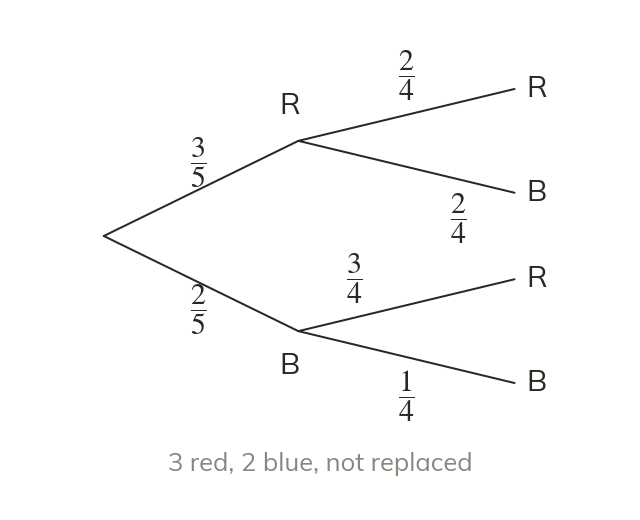

What changes
Without replacement, the first outcome changes what is left. On the second branches, the taken item and the total each drop by one.
With no replacement the first outcome changes what is left, so the second set of branch probabilities differs. Both the numerator and the denominator change: one fewer of the item taken, and one fewer in total.